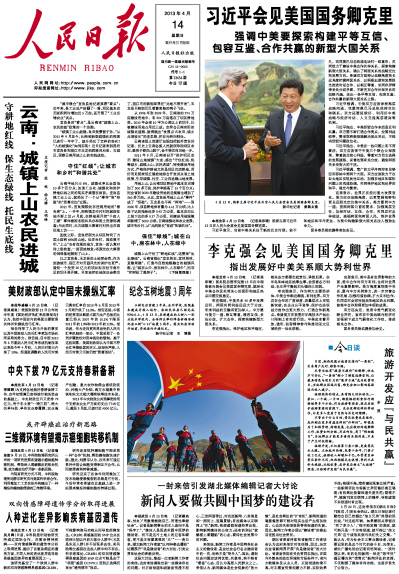
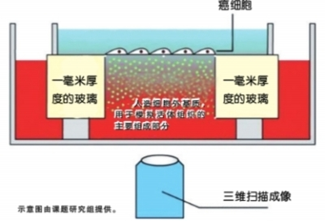

STUDY REPORTS
|  |  |
| The “ People‘s Daily ” carried a report on Prof.Liu’s research. | Our achievement has been reported in Xinhua website of China on April 16st 2014. |
| http://paper.people.com.cn/rmrb/html/2013-04/14/nw.D110000renmrb_20130414_8-01.htm | http://news.xinhuanet.com/tech/2013-04/16/c_124584637.htm |
MEETING REPORTS
http://www.iop.cas.cn/xwzx/snxw/201406/t20140630_4145414.html
http://www.iop.cas.cn/xwzx/kydt/201304/t20130410_3817353.html